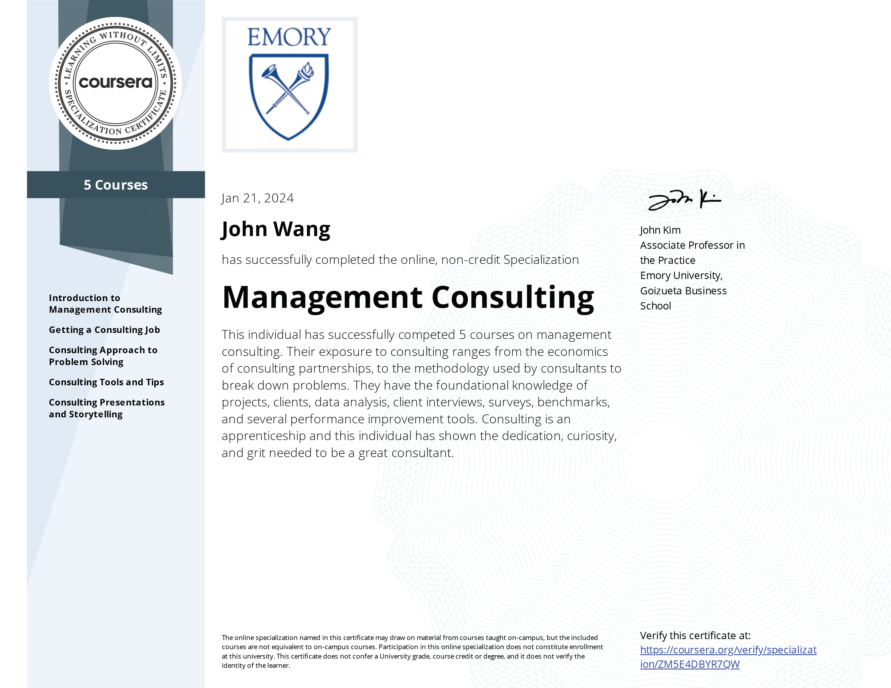

John's Management Consulting Certificates
Specialization (1)
Management Consulting Specialization (5 Courses) from Emory University by John Kim

Fundamentals (2)
Introduction to Management Consulting from Emory University by John Kim

Start Your Lifelong Learning from Accenture
Career Guidance (1)
Getting a Consulting Job from Emory University by John Kim

Problem Solving (2)
Consulting Approach to Problem Solving from Emory University by John Kim

Consulting Tools and Tips from Emory University by John Kim

Presentations (1)
Consulting Presentations and Storytelling from Emory University by John Kim